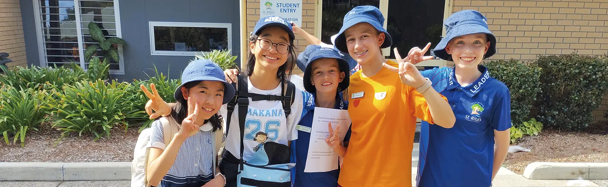
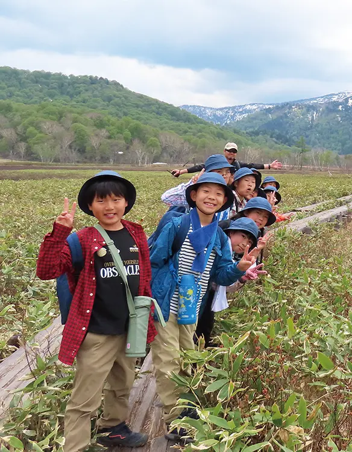
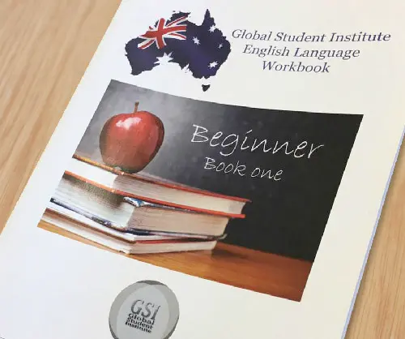
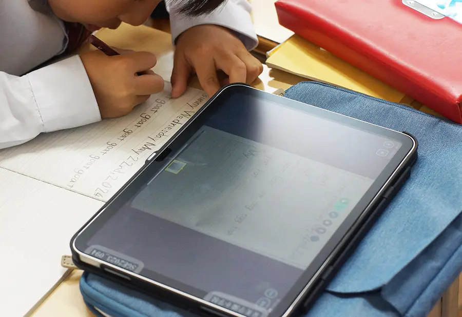
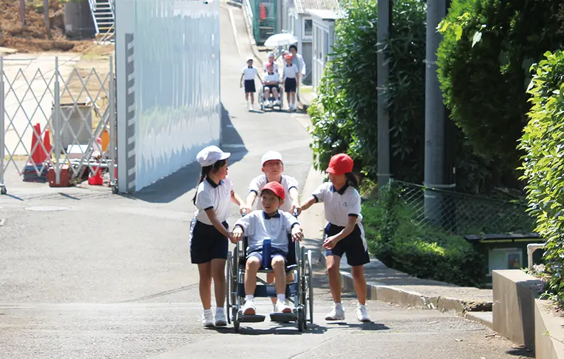
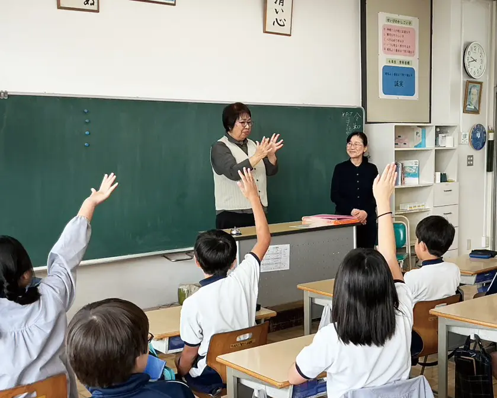
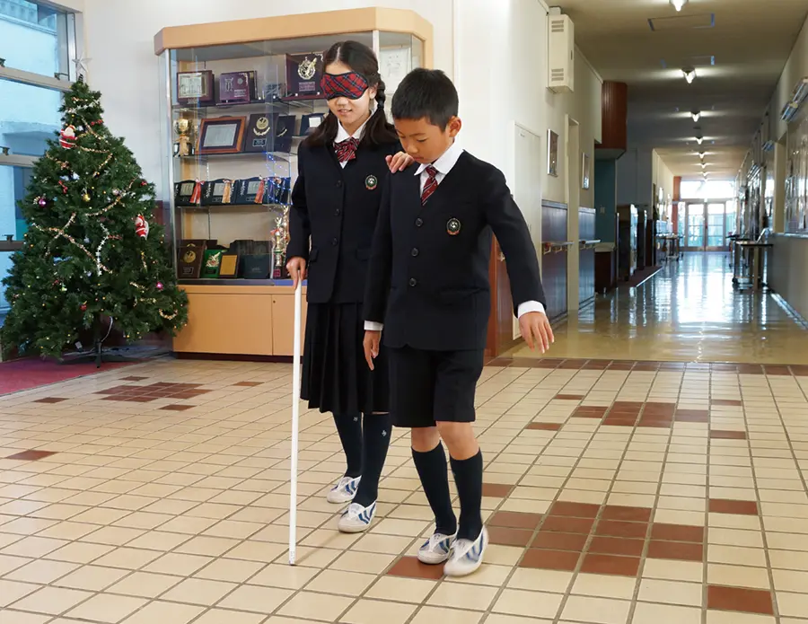

心と生きる力を、実体験を通して学ぶ。
変化の早い現代社会において、無制限な情報の提供を受けたりバーチャル体験を通して、実体験したような錯覚を起こしやすくなっています。
これは、人と自然、人と人との関わりを喪失したり、希薄になりかねません。
星美ではこの「関わり」を大切にし、「心」と「生きる力」を総合的な学習の中で実体験を通して学んでいきます。
これから益々グローバル化していく流れの中で、子どもたちはやがて社会を担う主人公となります。
その子どもたちのために私たちができることは、世界の人びとと接する機会をより多く与えることと、コミュニケーション力を向上させることです。
星美では、海外でのホームステイ（希望者のみ）の実施や、設立当初から英語を教育課程に取り入れるなど、国際理解教育に関する取り組みを積極的に行ってきました。
今後も子どもたちが、世界に目を向け、理解し、積極的に関わることができるよう、国際理解教育を推進していきます。
春休みを利用し、４年生以上の希望者を対象にオーストラリアホームステイを実施しています。
シドニーにある姉妹校のジョン・ボスコ小学校で創立者ドン・ボスコの精神を大切に一緒に学び、各家庭にステイさせてもらいます。 ２人１組でホームステイをし、現地の小学校で一緒に授業を受けたり、日本の文化を紹介したりと、密度の濃い時間を過ごします。
最初は恥ずかしがりながら自己紹介をしていた子どもたちも、いつの間にか打ち解け、一緒にスポーツなどで汗を流すようになっていく光景が印象的です。

現在必修とされている５年生からの外国語教育を、星美では１年生から行っています。
各学年ごとに習熟のためのテーマを設け、ネイティブの先生と共に英語を学んでいます。
この取り組みは、中学校に進んでからも抵抗なく英語に取り組むことができると評価をいただいています。

福祉に対する理解が重要になってきており、星美もこのバリアフリー教育に力を入れています。
特に体験型の教育を重視し、高齢者の方や障がいをもった方への理解を深めることにより、どのように行動すべきかを（教員、児童）共に考えています。
子どもたちも相手の立場にたつことを学び、大切に思う心もより強くなっていきます。
体の不自由な方との関わり
車いす体験では、グループに分かれ、学園内や赤羽の街を車いすで移動します。
通い慣れた道も車いすでの通行となると小さな段差や坂が移動を困難にさせます。
人通りの多い駅前、道幅の狭い歩道、長い距離に感じる横断歩道など、子どもたちは車いすで移動している方々の気持ちを疑似体験します。
この体験を通して、子どもたちは相手の立場になること、細かな配慮、思いやりを学んでいきます。

耳の不自由な方との関わり
講師の方をお招きし、グループに分かれて手話を体験します。挨拶などの手話を教わり、実際に自分たちでやってみます。
最初はたどたどしかった子どもたちも、終わる頃には自信をもって手話ができるようになります。
新しいコミュニケーション方法を学ぶため、子どもたちも目が輝かせながら講師の方の講義を聞く光景が印象的です。

校内で実施するアイマスク体験です。
授業では教室で紙を折ったり、文字を書いてみたり、物を探したりします。 いつもは意識することなく出来ていたことも、アイマスクをするととても難しい作業になることを子どもたちは実感していきます。
また、点字がどのような場所で使われているかを探してみたり、ビデオを使って目の不自由な方のための取り組みについて学んでいきます。
この他にも、歩行とその介助の体験を校内で行います。少しの段差があっても歩行が難しいことを身をもって体験します。
